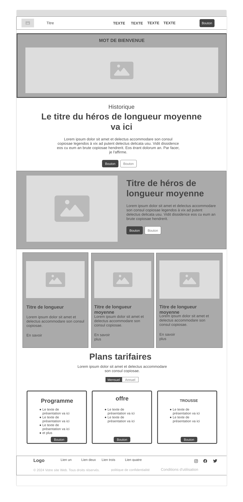
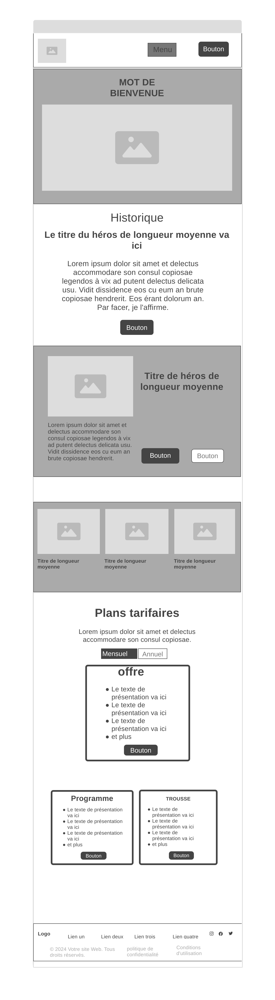

Site Name: AiKiclub
Description : The website will be dedicated to the discovery and promotion of Aikido practiced locally. It will include:The goal of this website is to: Increase awareness of Aikido in the community. Encourage new people to join the local dojo by providing clear and accessible information. Strengthen the visibility of the dojo through modern and professional online presence. Promote values of peace, discipline, and self-improvement through digital content.
https://coolors.co/717e86-000000-ffffff-e03a44-5b5b5d
computer
Vue Mobile (smartphone)
